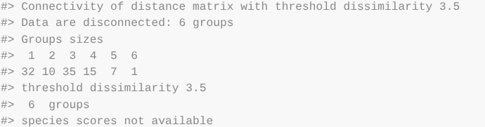

Filtered Cocluster Correlation Network Creation Guide
Nagashree A, McKayl Bailey, Grant Smith, Madison Moffett
CoClusterCorrelationNetwork.RmdThe package
The CCCN_CFN package takes experimental data of post-translational modifications based on experimental conditions and generates clusters of likely pathways. These pathways are generated based on analysis of which ptms cluster together compared to how those proteins are known to interact (using GeneMania and STRINGdb databases).
An important note about this package: there are no returned outputs from any of the functions. All outputs listed are assigned to the Global Namespace in order to prevent loss of data and promote ease of use. Some functions also pull variables from the global namespace. Ensure that all data is loaded into the global environment especially if analysis is completed across multiple sessions. BE ADVISED: Because all data is assigned to the global namespace, is is vital that the user does not run examples in a working session. the data will get overwritten by example data.
This file
This vignette is intended to be a step-by-step guide to walk users through the process of using the CCCN_CFN package. It includes an example pipeline demonstrating how to run the full analysis along with descriptions of each function. Estimated run-times are included with each description and are based on a preliminary dataset of ~9,000 post-translational modifications and 70 experimental conditions processed with a 12th Gen i5 processor and 8GB of RAM.
Pipeline
Step 1: Make Cluster List
Code
MakeClusterList(ptmtable, toolong = 3.5)Outputs

Figure 1 Example plot produced by the average of
Spearman Dissimilarity and Euclidean Distance as produced by
MakeClusterList.

Figure 2 Output of MakeClusterList
Figure 3 First cluster created by Euclidean Distance.
Description
Make Cluster list is the first step in the analyzing one’s data. This function takes the post-translational modification table and runs it through three calculations of distance: Euclidean Distance, Spearman Dissimilarity (1 - |Spearman Correlation|), and the average of the two of these. These calculations find the ‘distance’ between ptms based upon under what conditions they occur. These matricies are then run through tsne in order to put them into a 3-dimensional space. Please note: tsne involves an element of randomness; in order to get the same results, set.seed(#) must be called. A correlation table is also produced based on the Spearman Dissimilarity table before it is run through tsne.
Input
- ptmtable
- A data frame with rows of ptms and columns of experimental
conditions
- A data frame with rows of ptms and columns of experimental
conditions
- toolong
- Defaults to 3.5; threshold for cluster separation
Output
- ptm.correlation.matrix
- A data frame showing the correlation between ptms (as the rows and
the columns). NAs are placed along the diagonal.
- A data frame showing the correlation between ptms (as the rows and
the columns). NAs are placed along the diagonal.
- eu_ptms_list
- A three-dimensional data frame used to represent ptms in space to
show relationships between them based on distances. Based on Euclidean
Distance.
- A three-dimensional data frame used to represent ptms in space to
show relationships between them based on distances. Based on Euclidean
Distance.
- sp_ptms_list
- A three-dimensional data frame used to represent ptms in space to
show relationships between them based on distances. Based on Spearman
Dissimilarity.
- A three-dimensional data frame used to represent ptms in space to
show relationships between them based on distances. Based on Spearman
Dissimilarity.
- sed_ptms_list
- A three-dimensional data frame used to represent ptms in space to show relationships between them based on distances. Based on the average between Euclidean Distance and Spearman Dissimilarity.
Step 2: Make Correlation Network
Code
MakeCorrelationNetwork(keeplength = 2)
Description
Requires MakeClusterList to be ran first to create global variables (Euclidian/Spearman/SED Tsne Matrices). Finds the intersection between the Euclidian, Spearman, and SED Tsne matrices and turns it into an adjacency matrix. Then uses that matrix to filter relevant data from the Spearman correlation matrix and processes the result into an igraph object.
Input
- keeplength
- Defaults to 2; MakeClusterList only saves subsets whose size is
strictly greater than keeplength. (I.e. [‘AARS’, ‘ABR’] will be
discarded unless keeplength < 2)
- Defaults to 2; MakeClusterList only saves subsets whose size is
strictly greater than keeplength. (I.e. [‘AARS’, ‘ABR’] will be
discarded unless keeplength < 2)
- From Global Namespace:
- Should not but listed in function call, but user
must ensure that it is in the gloal environment
- ptmtable
- A data frame with rows of ptms and columns of experimental conditions
- ptm.correlation.matrix
- A data frame showing the correlation between ptms (as the rows and the columns). NAs are placed along the diagonal.
- eu_ptms_list
- A three-dimensional data frame used to represent ptms in space to
show relationships between them based on distances. Based on Euclidean
Distance.
- A three-dimensional data frame used to represent ptms in space to
show relationships between them based on distances. Based on Euclidean
Distance.
- sp_ptms_list
- A three-dimensional data frame used to represent ptms in space to
show relationships between them based on distances. Based on Spearman
Dissimilarity.
- A three-dimensional data frame used to represent ptms in space to
show relationships between them based on distances. Based on Spearman
Dissimilarity.
- sed_ptms_list
- A three-dimensional data frame used to represent ptms in space to show relationships between them based on distances. Based on the average between Euclidean Distance and Spearman Dissimilarity.
- Should not but listed in function call, but user
must ensure that it is in the gloal environment
Step 3: Retrieve GeneMania Edge File (OPTIONAL)
Code
make_gm_input(cccn_matrix)Description
NOTE: This step is optional but provides more information for filtering data.
This step requires more effort from the user than any other step but the package still attempts to simplify this process. First, the user runs make_gm_input in order to produce a text file that has all of the gene names in a list. The user then opens the file (which is created in their working directory) and copies this entire file (ctrl+A, ctrl+c). Next, the user goes to https://genemania.org and pastes the file into the input text box in the upper left corner. They click the magnifying glass in order to generate the GeneMania information. Finally, press the three dots on the left side of the screen and click the file that says “Interactions data”. This will save that file. The user then must be sure to move this file into their working directory for the rest of the pipeline.
Input
- cccn_matrix
- A matrix showing strength of relationships between proteins using the common clusters between the three distance metrics
Step 4: Find PPI Edges
Code
find_ppi_edges(cccn_matrix, gmfilepath = "genemania-interactions.txt")Description
Note: Examples take about 5-10 minutes to run.
Protein-Protein Interaction (or PPI) networks are networks that show us how different proteins are known interact with each other. The ppi networks STRINGdb and GeneMania are consulted to gather this information. It then gathers data from the PPI networks and filters them down to only examine the determined genes of interest. The data from both databases are then combined and returned. The returned database shows how strongly the proteins interact.
Input
- cccn_matrix
- A matrix showing strength of relationships between proteins using
the common clusters between the three distance metrics
- A matrix showing strength of relationships between proteins using
the common clusters between the three distance metrics
- gmfilepath (optional)
- Path to the genemania-interactions file. This is initialized to
‘genemania-interactions.txt’ which is the default from downloading the
data. This information is not needed if the user did not do the optional
Step 3.
- Path to the genemania-interactions file. This is initialized to
‘genemania-interactions.txt’ which is the default from downloading the
data. This information is not needed if the user did not do the optional
Step 3.
- From Global Namespace:
- Should not but listed in function call, but user
must ensure that it is in the gloal environment
- nodenames (if optional Step 3 has already been completed)
- A dataframe with all of the gene names involved in analysis
- Should not but listed in function call, but user
must ensure that it is in the gloal environment
Step 5: Cluster Filtered Network
Description
The final step in this analysis package filters the combined_ppi_network by the cccn_matrix. The purpose of this function is to take the proteins in the user’s study that are known to interact and only take the interactions whose ptms are shown to be correlated in the user’s ptm data. This suggests metabolic pathways by producing clusters of proteins that interact with each other as well as respond to stimuli via ptms under the same conditions.
Input
- combined_ppi_network
- A dataframe returned by step 3: Find PPI Edges; data frame
representing how strongly proteins are known to interact.
- A dataframe returned by step 3: Find PPI Edges; data frame
representing how strongly proteins are known to interact.
- cccn_matrix
- A matrix showing strength of relationships between proteins using the common clusters between the three distance metrics